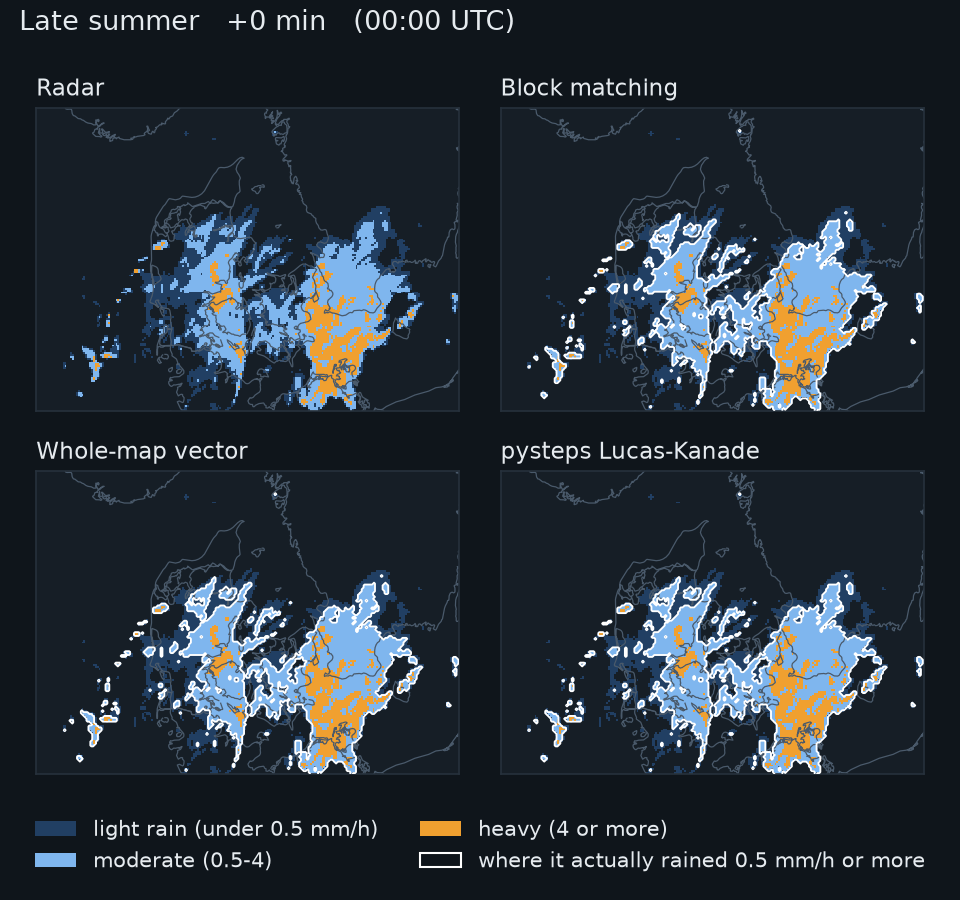

A nowcast is three steps
No weather model. Just the latest radar maps, and the fact that rain drifts with the wind.
Radar nowcasting · Denmark
Rain apps predict the next hour by moving the radar's rain along. We tested how simple that can be, on six months of Danish radar: a simple method gets within {{pc:pysteps-lk:bw7:60}} of the state of the art.
No weather model. Just the latest radar maps, and the fact that rain drifts with the wind.
We replayed {{n:issues}} past moments in {{n:units}} rainy periods, gave every method only the radar up to that moment, and checked where it put the rain an hour later.
Rain rides the wind about 3 km up. Over flat Denmark that wind is nearly the same everywhere within about 50 km, so one motion for the whole map does almost as well as one per block. Typical rain here moves at {{ms:speed}} km/h, toward the east or north-east.
Real motion of each 26 km block between two scans, 4 September 2026, merging into one arrow for the whole map.
Accuracy halves within three hours for every method. Moving rain cannot see a shower being born, or one fading away.
Copy the forecast 40 times and shift each copy a little, more the further ahead: about a kilometre for every three minutes. The chance of rain at a spot is the share of copies that bring rain there. Drag the slider.
At five Danish cities, moving the rain catches {{cpod:gw4:1}} to {{cpod:pysteps-lk:1}} of the hours that bring rain in the next hour, against {{cpod:persistence:1}} if you assume nothing moves.

The full report has every method, test and robustness check behind these numbers, from how the motion is measured to how much history to use.
Read the full report →